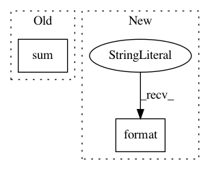

48282d57a0f11094d71c7310898ab347e6b847b3,nilearn/signal.py,,_standardize,#,23
Before Change
// remove mean if not already detrended
signals = signals - signals.mean(axis=0)
std = np.sqrt((signals ** 2).sum(axis=0))
std[std < np.finfo(np.float).eps] = 1. // avoid numerical problems
signals /= std
return signals
After Change
if standardize not in [True, False, "psc", "zscore"]:
raise ValueError("{} is no valid standardize strategy."
.format(standardize))
if detrend:
signals = _detrend(signals, inplace=False)
In pattern: SUPERPATTERN
Frequency: 3
Non-data size: 2
Instances
Project Name: nilearn/nilearn
Commit Name: 48282d57a0f11094d71c7310898ab347e6b847b3
Time: 2019-03-25
Author: gilles.de.hollander@gmail.com
File Name: nilearn/signal.py
Class Name:
Method Name: _standardize
Project Name: nilmtk/nilmtk
Commit Name: b523b464d8cafe29e352981c1c6df941f205592a
Time: 2014-07-09
Author: jack-list@xlk.org.uk
File Name: nilmtk/metrics.py
Class Name:
Method Name: mean_normalized_error_power
Project Name: mariogeiger/se3cnn
Commit Name: 697c5b9d1b83ea199c7590e1d0ef695cfb99aba5
Time: 2019-07-23
Author: geiger.mario@gmail.com
File Name: se3cnn/point/kernel.py
Class Name: Kernel
Method Name: forward